9 — Real scanner data, end to end
Download this tutorial as a Jupyter notebook (with NotebookUtils.jl next to it).
Everything so far ran on simulated data. This tutorial takes a real Cartesian brain acquisition and walks the whole pipeline: raw ISMRMRD file → AcquisitionInfo → preprocessing → sensitivity maps → reference reconstruction → retrospective undersampling → compressed sensing and parallel imaging → noise analysis.
The data comes from M4Raw (0.3 T low-field brain, 4 channels, CC-BY), downloaded through MRITestData.jl. The first run downloads ~12 MB; afterwards it is cached.
Data terms. The datasets have their own licenses and citation requirements, separate from the packages that download them. M4Raw is CC-BY: cite Lyu et al., M4Raw: A multi-contrast, multi-repetition, multi-channel MRI k-space dataset for low-field MRI research, Scientific Data 10, 264 (2023).
Contents
- Loading the raw data
- From
RawAcquisitionDatatoAcquisitionInfo - Preprocessing — prewhitening, sensitivity maps, coil compression
- The fully-sampled reference
- Retrospective undersampling and compressed sensing
- Parallel imaging on the same data
- Noise analysis with pseudo-replicas
using .NotebookUtils
using Ristretto
using MRITestData
using MIRTjim: jim
using Plots
using NamedDims
using LinearAlgebra
using Statistics
using Random
Random.seed!(0);┌ Warning: MRITestData downloads data from external sources that have their own terms of use.
│ Please review the terms before using downloaded data:
│ • mridata.org → http://mridata.org/terms
│ • ocmr → https://www.ocmr.info/download/
│ • cmrxrecon2024 → https://cmrxrecon.github.io/2024/FAQ.html
│ • cmrxrecon300 → https://www.synapse.org/Synapse:syn52965326
│ • usc_speech → https://creativecommons.org/licenses/by/4.0/
│ • m4raw → https://creativecommons.org/licenses/by/4.0/
│ • fastmri → https://fastmri.med.nyu.edu
│ To permanently suppress this notice, call:
│ MRITestData.dismiss_terms_notice!()
└ @ MRITestData ~/.julia/packages/MRITestData/oFwq3/src/MRITestData.jl:132
1. Loading the raw data
MRITestData needs to be told once where downloads go; :cache uses the package's own scratch space. load_raw returns an MRIBase.RawAcquisitionData: a list of profiles (one readout each), plus the ISMRMRD header.
if MRITestData.get_download_path() === nothing
MRITestData.set_download_path!(:cache)
end
entry = MRITestData.dataset(MRITestData.M4RAW, "multicoil_train/2022062402_T203")
raw = MRITestData.load_raw(entry)
println("profiles: ", length(raw.profiles))
println("per profile: ", size(raw.profiles[1].data), " (readout samples x channels)")
println("encoded size: ", raw.params["encodedSize"])
println("slices: ", length(unique(Int(p.head.idx.slice) for p in raw.profiles)))
println("field strength: ", raw.params["systemFieldStrength_T"], " T")profiles: 4608
per profile: (256, 4) (readout samples x channels)
encoded size: [256, 256, 18]
slices: 18
field strength: 0.3 T
2. From RawAcquisitionData to AcquisitionInfo
Turning a scanner file into the array a reconstruction can use is where most hand-written MRI code goes wrong, so Ristretto does it for you. Loading MRIFiles (MRITestData already does) activates a package extension that adds AcquisitionInfo(raw::MRIBase.RawAcquisitionData; sensitivity_maps = nothing).
It reads the encoding matrix from the header, drops noise-calibration profiles, decides Cartesian vs. non-Cartesian from raw.params["trajectory"], turns every encoding counter that actually varies into a named batch dimension, and reduces the sampling pattern that is present in the profiles to a subsampling spec.
Two conventions it gets right that hand-rolled assembly usually does not:
- k-space centring. A profile's phase-encode index is an index into the encoded matrix whose k = 0 line sits at
enc_lim_kspace_encoding_step_1.center, and its readout has k = 0 athead.center_sample— neither is necessarily the middle of the array. The constructor places each sample atraw_index - center + N ÷ 2, so DC really does land atN ÷ 2 + 1. - Image centring. Ristretto's own default is the plain-DFT one, image origin at index 1 — fine for k-space Ristretto itself simulated, wrong for a scanner, which images an object centred in the FOV. The constructor therefore sets
shifted_image_dimson every spatial axis.
Together those mean no fftshift anywhere in this tutorial. Get either wrong and the reconstruction comes out shifted — by half the FOV for the second one, which is the classic "my brain is in the four corners" bug.
acq_all = AcquisitionInfo(raw)
println(acq_all)
println()
println("dimensions: ", dimnames(acq_all.kspace_data), " = ", size(acq_all.kspace_data))
println("image size: ", acq_all.image_size)
println("shifted image dims: ", acq_all.shifted_image_dims)CartesianAcquisitionInfo(kspace_data=Array{ComplexF32}<kx: 256, ky: 256, coil: 4, z: 18>, encoding=2D, image_size=256×256, shifted_image_dims=(x,y))
dimensions: (:kx, :ky, :coil, :z) = (256, 256, 4, 18)
image size: (256, 256)
shifted image dims: (:x, :y)
The 18 slices came back as a :z batch dimension (a multi-slice 2D scan is not a 3D encoding, and the constructor keeps them apart). Every AcquisitionInfo also acts as a copy constructor, AcquisitionInfo(info; field = new_value), which is how one slice is pulled out without rebuilding the conventions by hand.
z_mid = size(acq_all.kspace_data, :z) ÷ 2 + 1
acq_slice = AcquisitionInfo(acq_all; kspace_data = acq_all.kspace_data[z = z_mid])
println(
"slice $z_mid of $(size(acq_all.kspace_data, :z)): ",
dimnames(acq_slice.kspace_data), " = ", size(acq_slice.kspace_data)
)
jim(
log.(abs.(unname(acq_slice.kspace_data)) .+ 1.0f-8);
title = "log |k-space|, per channel", nrow = 1, size = (1400, 380)
)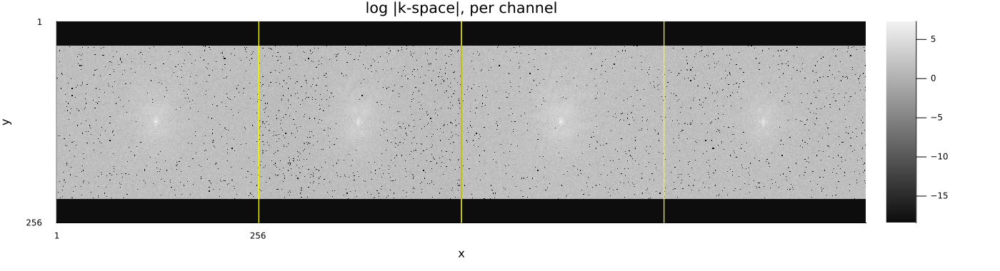
Note the black bands at the top and bottom of every channel. This protocol used a reduced phase resolution: only a centred block of the 256 encoded phase-encode lines was measured, and the file stores the rest as explicit zeros. The constructor cannot tell a measured zero from an unmeasured one, so it reports the scan as fully sampled — flagging the empty lines is on us.
The honest way to handle them is not to crop k-space to the measured block and call it a smaller fully-sampled grid: that silently changes the pixel size along y and squashes every image in the tutorial. It is to mark them as missing with a subsampling mask and keep the 256 × 256 image grid. Ristretto then zero-fills them, which is exactly what the scanner does.
ksp_slice = acq_slice.kspace_data
measured = [any(!iszero, view(unname(ksp_slice), :, j, :)) for j in axes(ksp_slice, :ky)]
println(
"phase-encode lines measured: ", sum(measured), " of ", length(measured),
" (lines ", findfirst(measured), ":", findlast(measured), ", ",
round(100 * sum(measured) / length(measured), digits = 1), "% phase resolution)"
)
acq_coils = AcquisitionInfo(
acq_slice; kspace_data = ksp_slice[ky = measured], subsampling = (:, measured)
)
println(
"stored k-space: ", size(acq_coils.kspace_data),
" reconstructed on: ", acq_coils.image_size
)phase-encode lines measured: 195 of 256 (lines 31:225, 76.2% phase resolution)
stored k-space: (256, 195, 4) reconstructed on: (256, 256)
# The coil images and their root-sum-of-squares — the coil-independent reference every comparison
# below is scored against.
coil_images = reconstruct(acq_coils) # no maps => one image per coil
reference = sqrt.(sum(abs2, unname(coil_images); dims = 3)[:, :, 1])
jim(
jim(abs.(unname(coil_images)); title = "coil images", nrow = 1),
jim(reference; title = "root sum of squares");
layout = (2, 1), size = (1100, 780)
)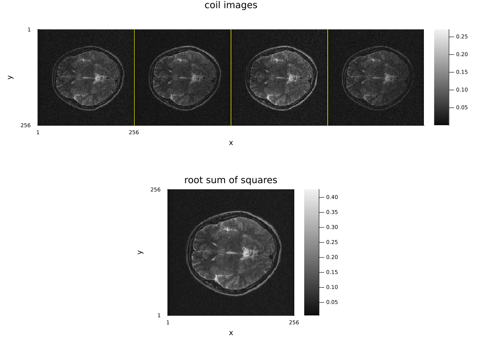
3. Preprocessing
Noise prewhitening
Receiver channels do not see independent noise. Neighbouring elements couple to each other and to the same body noise, so the channel noise covariance $\Psi$ has off-diagonal entries, and the channels do not even have equal noise variance (different cable lengths, preamplifier gains, loading).
That matters because every least-squares reconstruction here minimizes $\|\mathcal{A}x - y\|_2^2$, and that is the maximum-likelihood data term only when the noise is white with unit variance. Prewhitening makes it true: estimate $\Psi$ from noise-only samples, factor $\Psi = L L^H$, and replace $y$ by $L^{-1} y$ (and the sensitivity maps by $L^{-1} S$, which prewhiten does for you when they are attached).
estimate_noise_covariance wants pure-noise samples. A dedicated noise scan is best; this dataset has none, so we use the four corners of the measured k-space block — high frequency in both directions, where the brain has no signal left.
corner = 20
ksp = unname(acq_coils.kspace_data)
noise_patch = cat(
ksp[1:corner, 1:corner, :],
ksp[(end - corner + 1):end, 1:corner, :],
ksp[1:corner, (end - corner + 1):end, :],
ksp[(end - corner + 1):end, (end - corner + 1):end, :];
dims = 2
)
Ψ = estimate_noise_covariance(NamedDimsArray{(:kx, :ky, :coil)}(noise_patch))
acq_white = prewhiten(acq_coils, Ψ)
# The same corners, after whitening, to check the result.
ksp_w = unname(acq_white.kspace_data)
noise_patch_w = cat(
ksp_w[1:corner, 1:corner, :],
ksp_w[(end - corner + 1):end, 1:corner, :],
ksp_w[1:corner, (end - corner + 1):end, :],
ksp_w[(end - corner + 1):end, (end - corner + 1):end, :];
dims = 2
)
Ψ_after = estimate_noise_covariance(NamedDimsArray{(:kx, :ky, :coil)}(noise_patch_w))
# Covariance is easier to read as a correlation matrix: unit diagonal by construction, so every
# visible off-diagonal value is genuine channel coupling.
correlation(Ψ) = abs.(Ψ) ./ sqrt.(real.(diag(Ψ)) * real.(diag(Ψ))')
println("noise std per channel, before: ", round.(sqrt.(real.(diag(Ψ))); sigdigits = 3))
println("noise std per channel, after: ", round.(sqrt.(real.(diag(Ψ_after))); sigdigits = 3))
println(
"largest channel correlation, before: ",
round(maximum(correlation(Ψ) - I), digits = 3)
)
println(
"largest channel correlation, after: ",
round(maximum(correlation(Ψ_after) - I), digits = 3)
)noise std per channel, before: Float32[5.31, 4.39, 5.7, 5.18]
noise std per channel, after: Float32[1.0, 1.0, 1.0, 1.0]
largest channel correlation, before: 0.286
largest channel correlation, after: 0.0
What to look for in the two heatmaps below. The left one is the measured correlation matrix: a unit diagonal, and off-diagonal blobs wherever two elements of the array are coupled. The right one is the same estimate recomputed after whitening, and it must be the identity — black everywhere off the diagonal. That is not a soft convergence criterion but an algebraic identity: $L^{-1} \Psi L^{-H} = I$ exactly, so any visible off-diagonal structure on the right means the covariance was estimated from samples that were not pure noise (signal leaking into the corners, a too-small patch), not that whitening "did not work well enough".
chan = 1:size(Ψ, 1)
heatmap_args = (
clim = (0, 1), c = :viridis, aspect_ratio = 1, xticks = chan, yticks = chan,
xlabel = "channel", ylabel = "channel",
)
plot(
heatmap(chan, chan, correlation(Ψ); title = "|correlation| before", heatmap_args...),
heatmap(chan, chan, correlation(Ψ_after); title = "|correlation| after", heatmap_args...);
layout = (1, 2), size = (950, 400)
)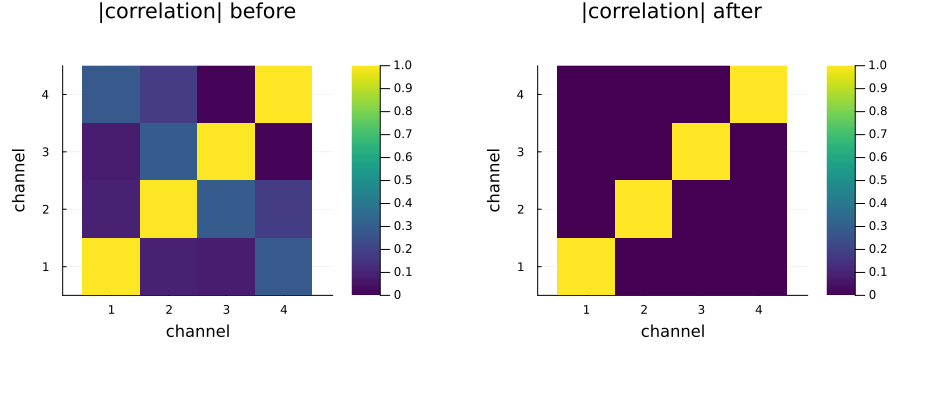
The other half of the story is in the printed standard deviations rather than in a picture. At this array's mild coupling — largest off-diagonal correlation around 0.3 — the four channels differ by tens of percent before whitening and are equal to three digits after it. Plotted as four overlaid noise histograms that is four nearly-identical bells becoming four identical bells, which is a figure that cannot be read; the numbers say it exactly.
Does it change the picture?
The two reconstructions below use the same sensitivity maps (estimated once, on the whitened data, then pushed back through L for the un-whitened path) so the only difference is whether the data term knows about $\Psi$. SNR is estimate_snr (tutorial 03 §7): the mean magnitude in a box at the centre of the image over the standard deviation in boxes in its four corners, which on this dataset are pure background.
Read the printed numbers, not the pictures — and read them for their size, not their sign: with four channels whose largest correlation is about 0.3 the two reconstructions differ by a few percent, which on this dataset comes out slightly in favour of the un-whitened one. That is not evidence against prewhitening. A single-image SNR estimate is itself uncertain at the percent level here, and the measure is blind to what whitening actually buys: it makes the data term the maximum-likelihood one, which is what the g-factor of section 7 is defined against. The step is cheap and always correct; it earns a visible number on a 32-channel array with correlations of 0.5 and up, not on four mildly coupled low-field channels.
# One set of maps, estimated on the measured data, carried into the whitened frame by the very
# same transform `prewhiten` applies to the k-space — so the two reconstructions differ in
# nothing but whether the data term knows about Ψ.
maps_raw = estimate_sensitivities(acq_coils; method = ESPIRiT(calib_size = 24, kernel_size = 6)).sensitivity_maps
maps_matched = prewhiten(maps_raw, Ψ)
x_raw = reconstruct(AcquisitionInfo(acq_coils; sensitivity_maps = maps_raw))
x_white = reconstruct(AcquisitionInfo(acq_white; sensitivity_maps = maps_matched))
# `signal_box` and `noise_box` are sizes in pixels: a 56-pixel box at the centre sits well inside
# the brain, and 40-pixel corner boxes are outside the head on every side.
snr(x) = estimate_snr(unname(x); signal_box = 56, noise_box = 40)
sig_mask, noise_mask = snr_masks(unname(x_white); signal_box = 56, noise_box = 40)
println("background pixels used: ", count(noise_mask))
println("SNR without prewhitening: ", round(snr(x_raw), digits = 2))
println("SNR with prewhitening: ", round(snr(x_white), digits = 2))
println(
"relative change: ",
round(100 * (snr(x_white) / snr(x_raw) - 1), digits = 1), " %"
)
side_by_side(
abs.(unname(x_raw)) ./ maximum(abs, unname(x_raw)),
abs.(unname(x_white)) ./ maximum(abs, unname(x_white));
titles = ("no prewhitening", "prewhitened"), size = (900, 420)
)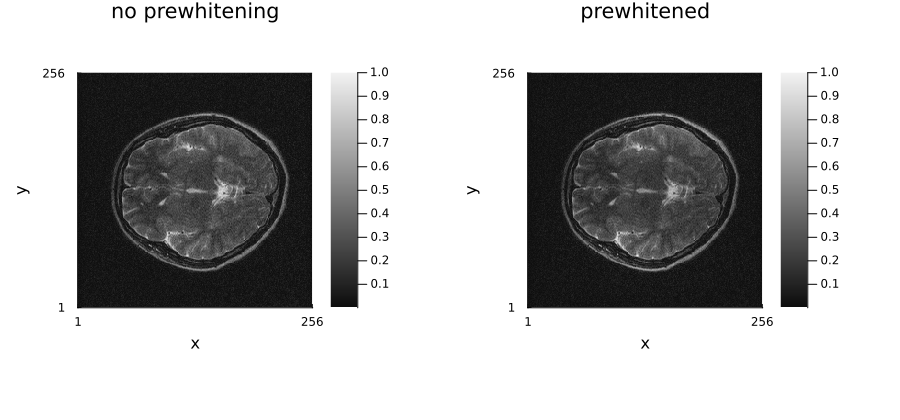
Sensitivity maps
estimate_sensitivities(acq; method) returns a new AcquisitionInfo with the maps filled in. Ristretto ships every estimator below; these are all of them, and all three work from data this acquisition already contains.
SelfCalibrating(; calib_size)(McKenzie 2002, Bydder 2002) — take the fully sampledcalib_size × calib_sizeblock at the centre of k-space, transform it to a low-resolution image per channel, and divide by the root-sum-of-squares combination. The map is then literally "what this channel sees, relative to everything the channels see together". Cheap and transparent, and the one to reach for when the centre really is fully sampled. Its weakness is the division: where no channel sees signal the denominator is noise, so the maps are noisy outside the object and carry no support information.AdaptiveCombine(; kernel_size)(Walsh 2000) — no calibration region at all. Around every pixel it forms thekernel_size × kernel_sizelocal channel correlation matrix and takes its dominant eigenvector as the local sensitivity vector, which is the SNR-optimal combination at that pixel. Use it when there is no ACS block, or when the pattern is irregular; the maps are smooth, but the per-pixel eigenvector is only determined up to a phase, so the phase of the combined image is not the object's.ESPIRiT(; calib_size, kernel_size, eigenvalue_threshold, subspace_threshold)(Uecker 2014) — the autocalibrating one. It builds a calibration matrix from the same central block, keeps the subspace whose singular values passsubspace_threshold, and takes, per pixel, the eigenvectors of the operator built from that subspace. Every pixel whose leading eigenvalue falls beloweigenvalue_thresholdis declared outside the object and its map is set to zero — a built-in support mask no other estimator here produces, which is what a SENSE-type reconstruction wants and why it is the usual default for real data. It costs the most of the three, and it is the only one with two thresholds to think about.
maps_selfcal = estimate_sensitivities(acq_white; method = SelfCalibrating(calib_size = 24)).sensitivity_maps
maps_adaptive = estimate_sensitivities(acq_white; method = AdaptiveCombine(kernel_size = 5)).sensitivity_maps
acq_espirit = estimate_sensitivities(acq_white; method = ESPIRiT(calib_size = 24, kernel_size = 6))
maps_espirit = acq_espirit.sensitivity_maps
jim(
jim(abs.(unname(maps_selfcal)); title = "SelfCalibrating", nrow = 1),
jim(abs.(unname(maps_adaptive)); title = "AdaptiveCombine", nrow = 1),
jim(abs.(unname(maps_espirit)); title = "ESPIRiT", nrow = 1);
layout = (3, 1), size = (1300, 1000)
)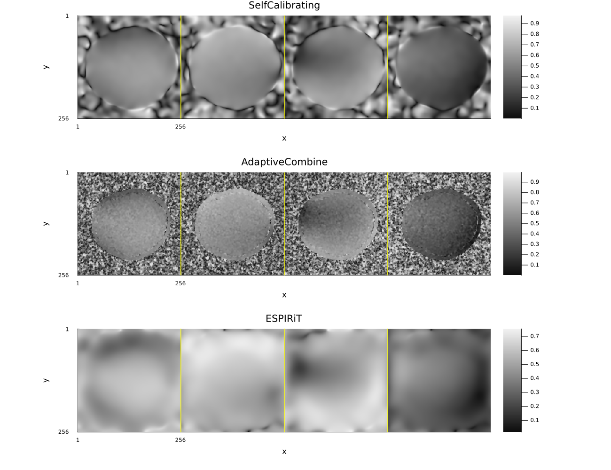
The support mask is visible in the panels above — ESPIRiT's maps go to zero off the head while the other two keep estimating something there — and it is what the reconstructions differ by:
for (label, maps) in (
("SelfCalibrating", maps_selfcal), ("AdaptiveCombine", maps_adaptive), ("ESPIRiT", maps_espirit),
)
x̂ = reconstruct(AcquisitionInfo(acq_white; sensitivity_maps = maps))
println(
rpad(label, 18), " direct reconstruction, background level ",
round(mean(abs.(unname(x̂))[1:12, 1:12]), sigdigits = 3)
)
endSelfCalibrating direct reconstruction, background level 0.00235
AdaptiveCombine direct reconstruction, background level 0.00296
ESPIRiT direct reconstruction, background level 0.00226
Normalizing the maps
The overall scale of a map set is arbitrary — it follows from how the maps were estimated, not from the anatomy. normalize_sensitivity_maps(acq) returns a copy divided by $\sqrt{\sum_c |S_c(r)|^2}$, the conventional SENSE scaling (Pruessmann et al. 1999). The factor is real and positive at every voxel, so the relative magnitude and phase between coils — the only thing the maps encode — is untouched. Voxels far below the peak sum of squares are set to zero instead of divided: out there the sum is noise.
acq_norm = normalize_sensitivity_maps(acq_espirit)
for (label, maps) in (("estimated", maps_espirit), ("normalized", acq_norm.sensitivity_maps))
sos = dropdims(sum(abs2, unname(maps); dims = 3), dims = 3)
inside = sos[sos .> 1.0e-3 * maximum(sos)]
println(
rpad(label, 12), " sum_c |S_c|^2 over the object: ",
round.(extrema(inside), sigdigits = 4)
)
endestimated sum_c |S_c|^2 over the object: (1.0f0, 1.0f0)
normalized sum_c |S_c|^2 over the object: (1.0f0, 1.0f0)
Two things follow. The image comes back on the conventional intensity scale, so a regularization strength carries over from one dataset to the next instead of competing with the map scale. And the encoding operator becomes a contraction, $\|\mathcal{A}\| \le 1$, with equality when the k-space is fully sampled — so the step size behind every iterative solve comes from a closed-form bound rather than a power iteration.
It is not automatic, and should not be: rescaling maps you supplied changes the units of the image you get back. It also stops being the whole story once the chain is more than a projection times a unitary transform — an NUFFT, density compensation or coil compression each break the $\|\mathcal{A}\| \le 1$ argument.
Coil compression
With four channels there is little to gain, but the mechanics are the same as on a 32-channel array: compress_coils returns the compressed acquisition and the compression matrix.
acq_compressed, C = compress_coils(acq_espirit, 2; method = SVDCompression())
println("compression matrix: ", size(C), " (virtual x physical)")
println("channels: ", size(acq_espirit.kspace_data, :coil), " -> ", size(acq_compressed.kspace_data, :coil))
rec_full_4ch = reconstruct(acq_espirit)
rec_full_2ch = reconstruct(acq_compressed)
jim(
jim(abs.(unname(rec_full_4ch)); title = "4 channels"),
jim(abs.(unname(rec_full_2ch)); title = "2 virtual channels"),
difference_image(abs.(unname(rec_full_4ch)), abs.(unname(rec_full_2ch)));
layout = (1, 3), size = (1350, 430)
)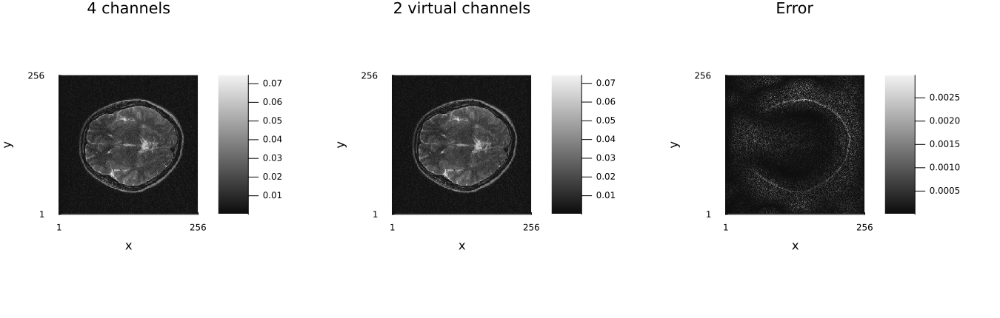
4. The fully-sampled reference
With sensitivity maps in hand, the adjoint reconstruction is the SNR-optimal coil combination. It is the target the accelerated reconstructions below are measured against.
x_ref = reconstruct(acq_espirit)
# Everything below is scored against the root-sum-of-squares of the fully sampled data, on
# magnitude, with the amplitude aligned (different reconstructions carry different scalings) and
# restricted to the object — background pixels are noise and would dominate an unmasked norm.
support = reference .> 0.1maximum(reference)
function rel_err(x̂)
a = abs.(unname(x̂))[support]
b = reference[support]
α = sum(a .* b) / sum(abs2, a)
return norm(α .* a - b) / norm(b)
end
println("sensitivity-weighted combination vs. RSS: ", round(rel_err(x_ref), digits = 4))
# Scale the adjoint panel by the same alpha rel_err aligns with, so the two panels are on a
# common scale rather than each other's own maximum.
α_ref = sum(abs.(unname(x_ref))[support] .* reference[support]) / sum(abs2, abs.(unname(x_ref))[support])
side_by_side(
reference, α_ref .* abs.(unname(x_ref));
titles = ("root sum of squares", "ESPIRiT + adjoint (A'y)"), size = (900, 420)
)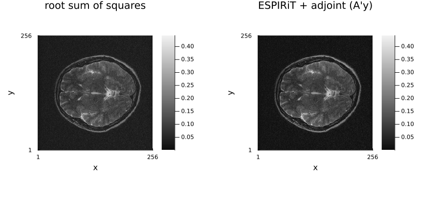
5. Retrospective undersampling and compressed sensing
Any sampling pattern can be applied after the fact — the standard way of evaluating an accelerated reconstruction against a real reference. The pattern has to stay inside the measured block, so the variable-density mask is intersected with measured; the acceleration below is quoted against the lines that were actually acquired, not against the encoded 256.
pdf = VariableDensitySampling(PolynomialDistribution(3), 3.0, 0.08)
mask_us = create_sampling_pattern(pdf, acq_coils.image_size)[2] .& measured
println(
"retained phase encodes: ", sum(mask_us), " of ", sum(measured),
" (", round(sum(measured) / sum(mask_us), digits = 2), "x acceleration)"
)
acq_us = AcquisitionInfo(
acq_white;
kspace_data = acq_white.kspace_data[ky = mask_us[measured]],
subsampling = (:, mask_us),
sensitivity_maps = maps_espirit,
)
x_zf = reconstruct(acq_us)
println("zero-filled: ", round(rel_err(x_zf), digits = 4))
jim(abs.(unname(x_zf)); title = "zero-filled, undersampled", size = (480, 420))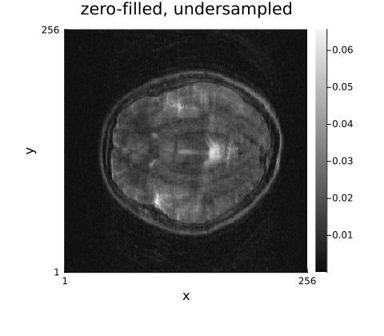
# λ is larger here than on the phantom of tutorial 5: this is 0.3 T data with four channels, so
# the SNR is low and the noise, not the aliasing, is what limits the result. The values below are
# the minima of a λ sweep on this exact acquisition (the sweep for `L1Wavelet2D` is the cell after
# the panels, and it prints its own minimum rather than leaving you to read it off the plot).
methods = (
"L2Image (CG-SENSE)" => IterativeReconstruction(L2Image(1.0f-2); maxit = 30),
"L1Wavelet2D" => IterativeReconstruction(L1Wavelet2D(6.0f-3); maxit = 60),
"TotalVariation2D" => IterativeReconstruction(TotalVariation2D(6.0f-3); maxit = 60),
"wavelet + TV" => IterativeReconstruction(L1Wavelet2D(5.0f-3), TotalVariation2D(3.0f-3); algorithm = ADMM(), maxit = 60),
"TGV" => IterativeReconstruction(TotalGeneralizedVariation2D(6.0f-3); algorithm = ADMM(), maxit = 60),
)
recons = map(methods) do (label, method)
x̂ = reconstruct(acq_us, method)
println(rpad(label, 22), " ", round(rel_err(x̂), digits = 4))
label => x̂
end;L2Image (CG-SENSE) 0.5173
L1Wavelet2D 0.2125
TotalVariation2D 0.1969
wavelet + TV 0.1967
TGV 0.1964
Three things are worth reading off those numbers. The unregularized parallel-imaging solve (L2Image with a small λ is CG-SENSE) is worse than the zero-filled adjoint here: with four low-field channels the inverse problem is badly conditioned, and CG happily amplifies noise into the answer — section 7 measures the g-factor for exactly this setup.
Every prior beats the zero-filled adjoint, but the finite-difference ones (TV, TGV) beat it by about half again as much as the wavelet does (0.036 of error removed against 0.025), and adding a wavelet term to TV buys nothing over TV alone. That ordering is what this anatomy and this noise level ask for: at 0.3 T with a 2.5× effective acceleration the error is dominated by noise rather than by aliasing, the zero-filled adjoint is already a fair denoiser because the sensitivity-weighted combination averages the four channels, and what is left for a prior to remove is noise on a brain that is close to piecewise constant at this resolution. A prior only helps when it removes more error than the bias it introduces, and the margin the wavelet manages is the smaller one.
And the acceleration itself is the reason the margins are narrow: only 195 of the 256 encoded phase encodes were measured at all, so an effective 2.5× is already a thin sampling of this data. Pushing the retrospective factor further (4×, 5×) makes every reconstruction worse without changing their order.
jim(
jim(reference; title = "reference (fully sampled)"),
jim(abs.(unname(x_zf)); title = "zero-filled"),
(jim(abs.(unname(x̂)); title = label) for (label, x̂) in recons)...;
layout = grid_layout(length(recons) + 2), size = (1350, 1350)
)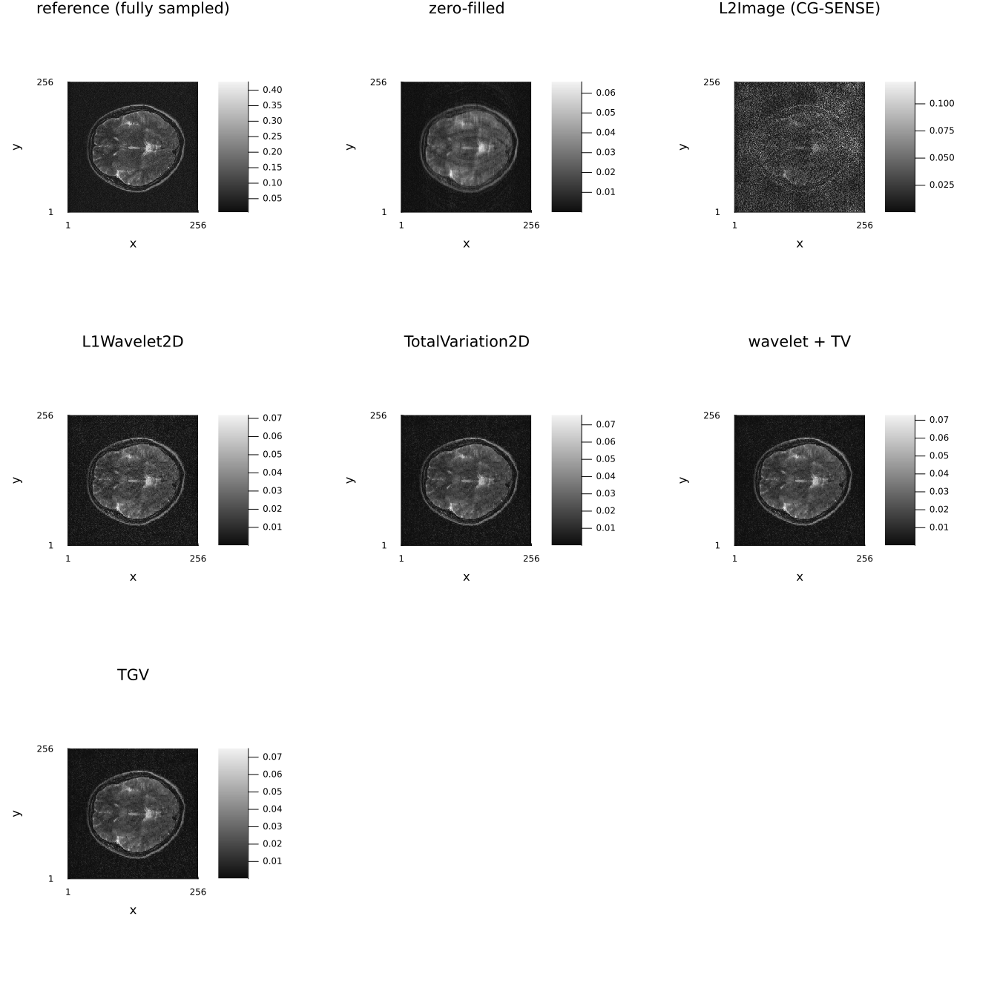
# A λ sweep on the real data — the same exercise as on the phantom, with a real noise floor. This
# is where the λ used above comes from; the minimum is shallow, and everything past it trades
# noise for blur faster than it removes aliasing.
λs = [1.0e-3, 3.0e-3, 6.0e-3, 1.0e-2, 2.0e-2, 5.0e-2]
errs = map(λs) do λ
rel_err(reconstruct(acq_us, IterativeReconstruction(L1Wavelet2D(λ); maxit = 60)))
end
for (λ, e) in zip(λs, errs)
println("λ = ", rpad(λ, 8), " relative error ", round(e, digits = 4))
end
println("best λ = ", λs[argmin(errs)], " at ", round(minimum(errs), digits = 4))
plot(
λs, errs; xscale = :log10, marker = :circle, lw = 2, legend = false,
xlabel = "lambda", ylabel = "relative error vs. reference",
title = "L1-wavelet lambda sweep, real data", size = (700, 400)
)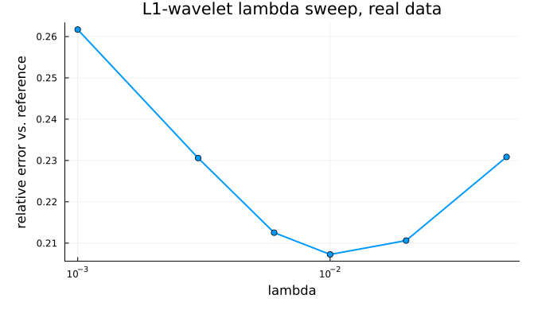
Preconditioning the CG solve is the other knob on this problem, and it belongs with the rest of the solver settings rather than here: CGNR(; P, P_is_inverse) and the diagonal image-domain preconditioner it takes are in 06_algorithms_and_configuration §2. It would show nothing on this dataset — estimate_sensitivities normalizes its maps so that $\sum_c |S_c|^2 \approx 1$ over the object, which is exactly the case where a diagonal preconditioner is close to a no-op.
6. Parallel imaging on the same data
A GRAPPA-style pattern — uniform R = 2 plus a fully sampled autocalibration block — lets the autocalibrated methods run on the same slice.
R = 2
nky = acq_coils.image_size[2]
ky_centre = nky ÷ 2 + 1
mask_pi = falses(nky)
mask_pi[1:R:nky] .= true
mask_pi[(ky_centre - 12):(ky_centre + 11)] .= true
mask_pi .&= measured
println("net acceleration: ", round(sum(measured) / sum(mask_pi), digits = 2), "x")
acq_pi = AcquisitionInfo(
acq_white;
kspace_data = acq_white.kspace_data[ky = mask_pi[measured]],
subsampling = (:, mask_pi),
sensitivity_maps = maps_espirit,
)
x_grappa = reconstruct(acq_pi, GRAPPA(kernel_size = (3, 2), calib_size = (size(ksp, 1), 24)))
x_sense = reconstruct(acq_pi, IterativeReconstruction(L2Image(1.0f-2); maxit = 30))
x_sense_cs = reconstruct(acq_pi, IterativeReconstruction(L1Wavelet2D(1.0f-2); maxit = 60))
println("GRAPPA ", round(rel_err(x_grappa), digits = 4))
println("SENSE (L2, CG) ", round(rel_err(x_sense), digits = 4))
println("SENSE + wavelet CS ", round(rel_err(x_sense_cs), digits = 4))
jim(
jim(abs.(unname(x_grappa)); title = "GRAPPA"),
jim(abs.(unname(x_sense)); title = "SENSE (L2, CG)"),
jim(abs.(unname(x_sense_cs)); title = "SENSE + wavelet CS");
layout = (1, 3), size = (1350, 430)
)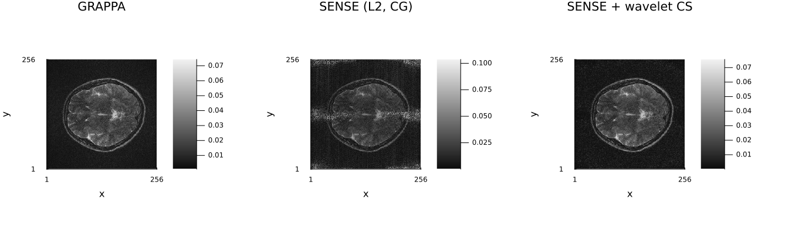
7. Noise analysis with pseudo-replicas
What question this answers
Accelerating an acquisition costs SNR twice: once because fewer samples were collected (the $\sqrt{R}$ factor, which is unavoidable), and once because unfolding the aliased signal is an ill-conditioned inverse problem whose conditioning varies from pixel to pixel. The second factor is the geometry factor $g$: the local noise amplification caused by the geometry of the coil array relative to the sampling pattern. It is what makes accelerated images noisy in the middle of the FOV, where the coil sensitivities are most similar, while the edges stay clean.
For plain SENSE there is a closed-form $g$ map, because the reconstruction is a linear operator you can write down. Every interesting reconstruction in this tutorial is not linear: L1Wavelet2D thresholds, TotalVariation2D and TGV solve a non-smooth problem, GRAPPA fits kernels from the data. There is no matrix to invert, so there is no analytic $g$.
How pseudo-replicas answer it anyway
The Monte Carlo pseudo-replica method (Robson et al., Comprehensive quantification of signal-to-noise ratio and g-factor for image-based and k-space-based parallel imaging reconstructions, Magnetic Resonance in Medicine 60:895–907, 2008) treats the reconstruction as a black box and measures what it does to noise:
- Take the measured k-space and add a fresh draw of synthetic complex Gaussian noise to it.
- Run the whole reconstruction — the same method, the same λ, the same number of iterations.
- Repeat
replicastimes, then take the pixel-wise mean and standard deviation of the resulting magnitude images.
The standard-deviation map is the noise the reconstruction actually delivers, non-linearity and all. pseudo_replica also divides it by the corresponding fully-sampled map (with the $\sqrt{R}$ factor removed) to give a g_factor field.
How to read the map
$g = 1$ means the acceleration cost nothing beyond the $\sqrt{R}$ sample loss; $g = 3$ means the noise in that pixel is three times worse than that. Expect a smooth map with its maximum near the centre of the object, growing with acceleration and shrinking as channels are added. Only the values inside the object mean anything — outside it both maps are noise divided by noise — so the map is shown masked.
Limitations
- It is Monte Carlo: the estimate has its own error, falling as $1/\sqrt{N_{\text{replicas}}}$. Sixteen replicas, used here to keep the tutorial fast, is enough for the pattern but not for a number you would publish; Robson et al. use hundreds.
- For a non-linear reconstruction the "g-factor" is not a property of the coil geometry alone — it depends on λ, on the iteration count, and on the underlying image. A regularizer can push $g$ below 1 by biasing the estimate: less noise, more smoothing. The σ map alone never reveals that trade; compare it against the error maps in section 5.
- The added noise must dominate nothing and change nothing else, so data-dependent scaling would rescale every replica by its own noise level.
pseudo_replicatherefore insists onNoScaling()orFixedScaling().
noise_level = 0.02 * sqrt(mean(abs2, unname(acq_white.kspace_data)))
res_full = pseudo_replica(
acq_espirit, IterativeReconstruction(L2Image(1.0f-2); maxit = 20);
replicas = 16, noise_std = noise_level, scaling = NoScaling()
)
res_us = pseudo_replica(
acq_us, IterativeReconstruction(L2Image(1.0f-2); maxit = 20);
replicas = 16, noise_std = noise_level, scaling = NoScaling()
)
println("fields: ", keys(res_us))
println(
"mean g-factor over the object: ",
round(mean(res_us.g_factor[reference .> 0.15maximum(reference)]), digits = 3)
)fields: (:mean, :std, :g_factor)
mean g-factor over the object: 2.452
jim(
jim(res_full.std; title = "sigma, fully sampled"),
jim(res_us.std; title = "sigma, undersampled"),
jim(res_us.g_factor .* support; title = "g-factor (masked)");
layout = (1, 3), size = (1350, 430)
)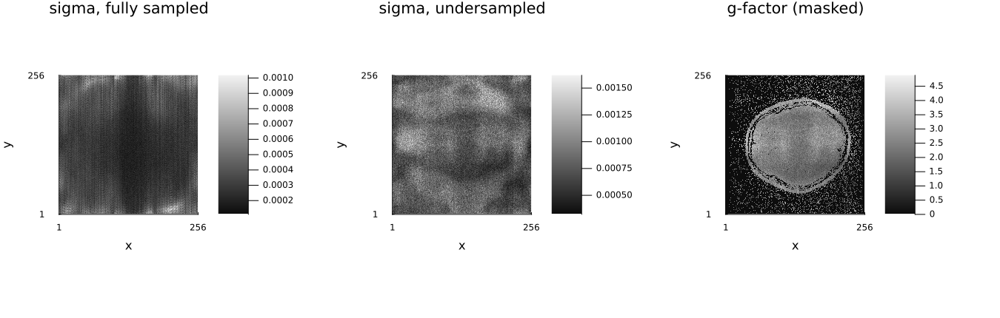
The same machinery works on a regularized reconstruction, which is the point of the Monte Carlo approach. Note the caveat above when reading the comparison: the ℓ₁-wavelet σ map is lower everywhere, but part of that is bias, not a better-conditioned inverse.
res_cs = pseudo_replica(
acq_us, IterativeReconstruction(L1Wavelet2D(2.0f-2); maxit = 30);
replicas = 16, noise_std = noise_level, scaling = NoScaling()
)
println("mean sigma over the object, CG-SENSE: ", round(mean(res_us.std[support]), digits = 5))
println("mean sigma over the object, L1-wavelet: ", round(mean(res_cs.std[support]), digits = 5))
side_by_side(
res_us.std .* support, res_cs.std .* support;
titles = ("sigma - CG-SENSE", "sigma - L1-wavelet"), size = (900, 420)
)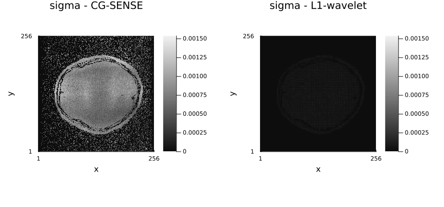
Further reading
The scanner-side facts this tutorial has to cope with, from Questions and Answers in MRI:
- k-space: data — what the raw file holds, and in what order.
- How to measure SNR — the definitions behind the noise statistics prewhitening is estimating.
- Parallel imaging and PI: artifacts — what an under-calibrated sensitivity map does to a real reconstruction.
Lectures and tutorials elsewhere:
- M. S. Hansen, P. Kellman, Image reconstruction: an overview for clinicians, J. Magn. Reson. Imaging 2015 — noise prewhitening, coil combination and SNR units, the preprocessing chain of §3, in the order a scanner applies it.
Environment
print_versions()Julia Version 1.13.3
Commit 67ac47b9cd8 (2026-10-25 15:28 UTC)
Build Info:
Official https://julialang.org release
Platform Info:
OS: Linux (x86_64-linux-gnu)
CPU: 4 × AMD EPYC 7763 64-Core Processor
WORD_SIZE: 64
LLVM: libLLVM-20.1.8 (ORCJIT, znver3)
GC: Built with stock GC
Threads: 4 default, 1 interactive, 4 GC (on 4 virtual cores)
Environment:
JULIA_PKG_SERVER_REGISTRY_PREFERENCE = eager
JULIA_NUM_THREADS = 4
Ristretto 0.1.0 (dev)
AbstractOperators not loaded
FFTWOperators not loaded
NFFTOperators not loaded
WaveletOperators not loaded
DSPOperators not loaded
ContourletOperators not loaded
StructuredOptimization not loaded
ProximalOperators not loaded
ProximalAlgorithms not loaded
OperatorCore not loaded
NestedThreading 0.1.3